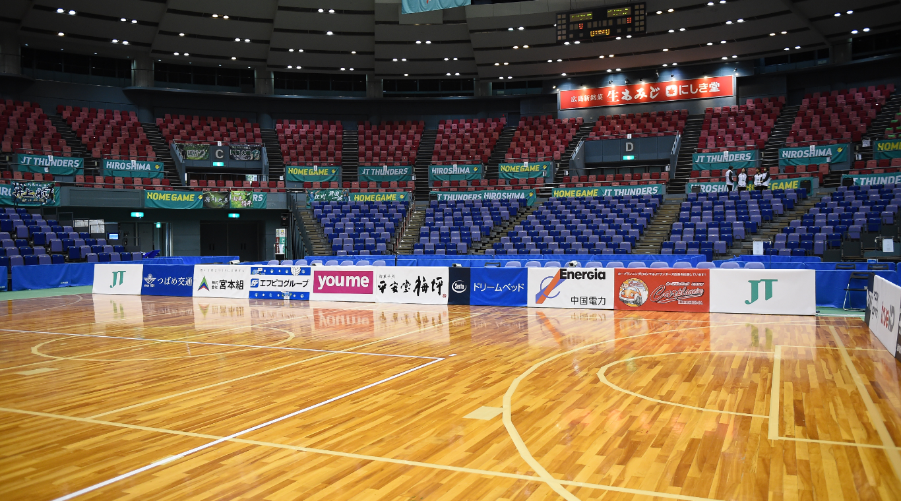
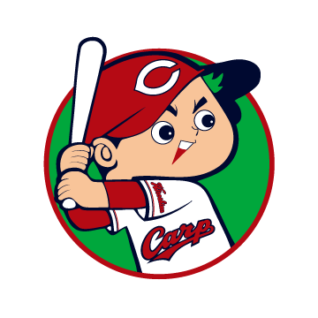
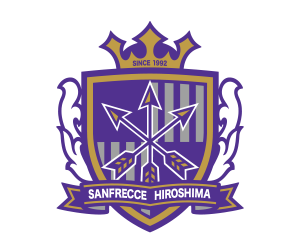
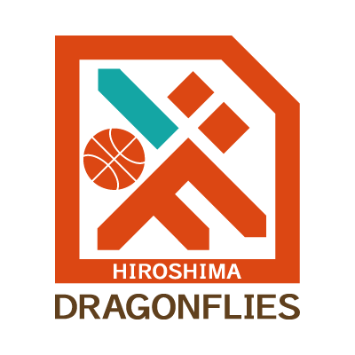

スポーツ
広島県のスポーツチームといえばカープとサンフレです。
ですが、そのほかにもドラゴンフライズなどのチームもあります。
いずれもいろいろな歴史を持つチームです。


広島東洋カープ
東洋カープは市民に愛されている球団で、選手や裏方、観客やファンに一体感があります。
マツダスタジアムでは球場に入る前からカープを感じるものが色々なところにあります。
スタジアムの中には、バリエーション豊富なシート(座る場所)があります。
サンフレッチェ広島
チーム名の由来は、毛利元就の「三本の矢」にちなみ、「折れないチームになりたい」と言う想いが込められたものです。
日本語の「三」とイタリア語の「フレッチェ(矢)」を合わせて作られた造語です。
スタジアムの最前列付近は観客と選手がほぼ同じ目線なので、迫力のあるプレーを楽しむことができます。


ドラゴンフライズ
チーム名の由来は、宮島だけに生息している「ミヤジマトンボ」から取られたそうです。
トンボは前に飛び、後ろには下がらないということで縁起の良い虫とされています。
会場には、会場でしか売られていないグッズがあります。